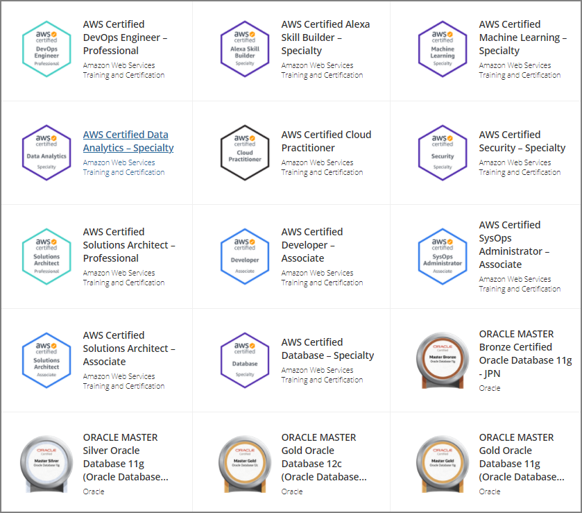

約1ヶ月の勉強でAWS 認定 DevOps エンジニア – プロフェッショナルを合格することが出来たので簡単にメモ。
準備方法
- 試験ガイド
- 重要サービスのBlackBelt資料
- 公式の無料対策E-Learning
- 実機検証（特にCF、Codeシリーズあたり）
- 公式模擬試験
- 有料問題集（Whizlabs）
- ホワイトペーパー
勉強対象
Solution Architect Professionalや各種Specialityの勉強で幅広く勉強していたので、重要サービスだけ重点的に実機触ったり勉強したりした。スムーズに勉強が進んだのは既にSAP等を取得しているのも大きいと思う。
重要なサービス
- Systems Manager
- CloudFormation
- Elastic Beanstalk
- Config
- CodePipeline/CodeBuild/CodeDeploy
- CloudWatch（特にLogs、Events等）
- AutoScaling
- ECS
必要な概念
- CICD
- 災対設計
- デプロイメント（ブルーグリーン/カナリアリリースなど）
- RTO/RPOの概念
- ユースケースごとにバックアップや設計が異なるので適切なケースを選択できるか
- バックアップ/リカバリ
できればざっくり勉強した方が良いサービス
- Inspector
- EC2
- Opsworks
- StepFunction
- GuardDuty
- Macie
- KMS
- DynamoDB
所感・その他
CICDを始めとしたDevOpsで必要な概念、運用時に必要な知識、スキルが身についた気がする。問題のケースが実務で検討していたシチュエーションと酷似しており、普段の仕事でも生かせそうと試験中に思った。
無事に合格して11冠に。ここまで来ると12冠が最終目標だが、機械学習の知識定着に向けたG検定やIPA試験に向けて冬・春は勉強予定。
https://www.youracclaim.com/users/jumpei-imazato/badges
- AWS Certified Cloud Practitioner
- AWS Certified Solutions Architect – Associate
- AWS Certified Developer – Associate
- AWS Certified SysOps Administrator – Associate
- AWS Certified Solutions Architect – Professional
- AWS Certified DevOps Engineer – Professional
- AWS Certified Security – Specialty
- AWS Certified Machine Learning – Specialty
- AWS Certified Database – Specialty
- AWS Certified Data Analytics – Specialty
- AWS Certified Alexa Skill Builder – Specialty
